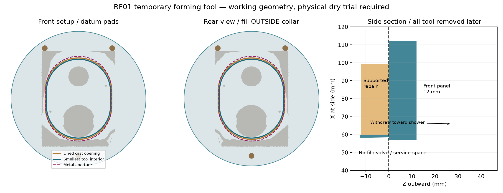
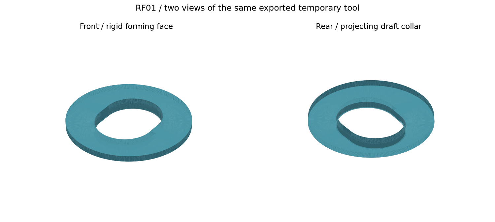
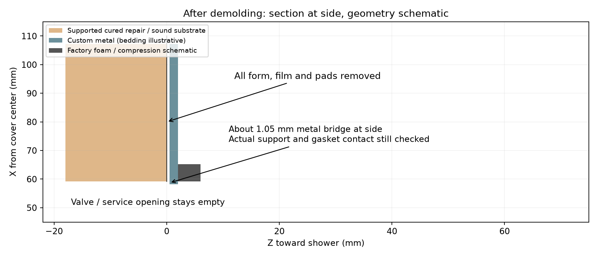

FT02 project home
REPAIR FORM SETUP
Fit-trial release | Physical and permanent checks remain open
RF01: decide before printing or filling
Repair contractor + Kohler installer. This optional tool is separate from the two plate orders. Use only if the plate trial exposes a real support gap.

Purpose and measured limits
One temporary PETG body: D240 face, 12 mm thick; 12 mm deep drafted collar, 118.35 x145.10 outside at front, 2 mm wall, 1 degree draft smaller toward the rear. Minimum interior is113.93 x140.68. Lined cast opening is118.45 x145.20 at the face. This is not the custom plate aperture.
Choose this route only when useful
First trial the factory parts and the FT02 plates. If they have sound stable support, omit the form and preserve that support. Otherwise inspect the exposed rear substrate and permanent backing. Use RF01 for a small supported cementitious repair only after a free insert/withdraw rehearsal and service-tool check.
What the analysis proves
The modeled collar and its inner face lip clear scoped captured surfaces in one working pose. It does not establish the full panel contact plane, every concealed surface, print strength, bond or cartridge extraction. Real pads must touch sound stone without rocking. No fill if the dry trial binds, shifts, or blocks service.
RF01: set the front datum; fill from rear
Contractor | Tools: printed RF01, straightedge, 0.05 mm PE film/pads, two padded battens, stable brace, removable hardware cover, suitable permanent backing and repair material.

Prepare and rehearse
Print the flat front face on the bed, collar upward. Smooth/line the molding surfaces; check face flatness target0.3 mm. Bench-test a small repair/film/PETG coupon for release and heat. Wrap the back molding face and outside collar in continuous removable0.05 mm PE; keep seams outside bearing zones and all release oils off stone.
Hold from the front
Three matched removable0.05 mm contact pads near (+/-60,90) and(0,-102) in the cover-centered frame set the lined casting face at the existing sound-tile plane. They are not structural anchors. Clamp broad padded battens across the front at y=+/-90 to a stable brace with a sound reaction. No force on stems, rods or pipes; no tile drilling. Prove stability under light intended placement pressure.
Fill only the required zones
Protect moving hardware with a removable cover. From rear, close exposed outer sides with removable shuttering. Hand-place repair into missing front12 mm bearing zones OUTSIDE the collar and within theD220 support area, bonded to prepared suitable substrate and securely supported permanent backing. Leave the central cavity, pipes, stops and service space empty. Do not ram material or bury a temporary part.
RF01: cure, remove and inspect
A tool produces shape; suitable substrate, backing, workmanship and the complete seal system produce a usable repair. No permanent plastic remains.

Material branch
Rapid Set Cement All is a candidate only on suitable sound cementitious substrate, with clean prepared surfaces and supported vertical work. Its datasheet permits featheredge to4 inches and generally45-90 F placement; follow the current bag/datasheet mix, SSD and curing instructions. Existing travertine or unknown board is not assumed a suitable bond substrate. If unsuitable, use supported matching stone/cement-board repair and a compatible bonding/waterproofing system. No new tile abrasion is authorized.
Cure and strip are separate decisions
Cement All requires water curing for at least1 hour under its specified conditions; that is not permission to strip, load, seal or wet the shower after1 hour. Contractor confirms adequate strength, moisture and product-specific cure. Release brace and pull straight toward shower by the panel, using the rear-narrowing draft. Do not pry on tile or plumbing; stop if it binds. Remove every film, pad, cover and shutter.
Check the finished repair
Inspect voids, adhesion, sound support, flatness and unchanged service opening. Repeat the complete factory/plate dry fit. Any repair visible inside the aperture must remain clear of control and tool envelopes. Resolve concealed waterproofing before sealing; then follow INSTALLATION_GUIDE for compatible seal/primer, cure, drain, function and separate supply/spray checks.